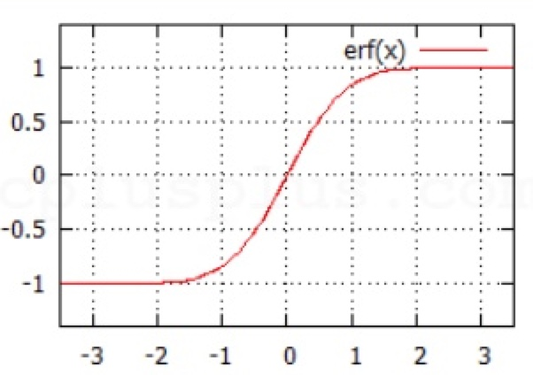
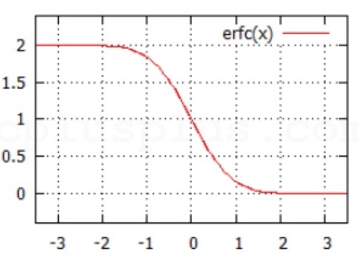
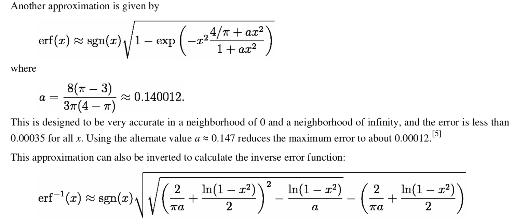
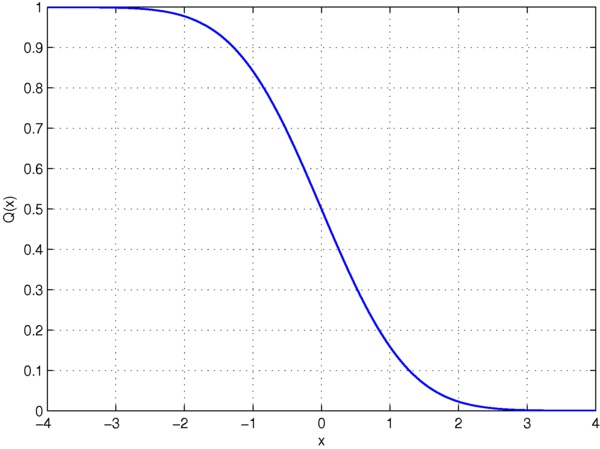

之前需要写一个分布式的误差函数模块，所以对这里进行了一些了解，另外还通过误差函数计算了累积分布函数，并且实现了一种逆误差函数的近似估计。

C++中 math 库中包含 erf 的实现。http://www.cplusplus.com/reference/cmath/erf/
调用erf(x)
性质：
其值域范围为(-1, 1)，区间长度为 2。所以 erfc 是单调增函数，在通信原理中常用于计算误码率与信噪比的关系，信噪比越高，误码率越低。

性质
erf 的逆误差函数求解有很多种方法，通常使用近似估计。在[1]中，参照如下方法求解：

double erfinv(double x) { double sgn = (x < 0) ? -1.0 : 1.0; x = (1 - x) * (1 + x); double lnx = log(x); double tt1 = 2 / (M_PI * 0.147) + 0.5f * lnx; double tt2 = 1 / (0.147) * lnx; return(sgn * sqrtf(-tt1 + sqrtf(tt1 * tt1 - tt2))); }
C++中没有原生的 CDF 函数，可通过误差函数计算， (see here, or here)
公式推导过程可参考正态分布和标准正态分布
// 标准正态分布 double standard_normal_CDF(double value) { return 0.5 * erfc(-value * M_SQRT1_2); } // 正态分布 long double cumul_dist_func(double value, double mu, double sigma) { double param = 0.5; double t = (value - mu) / sigma * M_SQRT1_2; return param * erfc(-t); }
Q 函数是标准正态分布的右尾函数，代表变量 x 比 X 标准差大的概率。是累积分布函数

install.packages("pracma") library("pracma") erf(x)
可参考 math_errhandling.
If the implementation supports IEEE floating-point arithmetic (IEC 60559),
#include <stdio.h> #include <math.h> double normalCDF(double x) // Phi(-∞, x) aka N(x) { return erfc(-x/sqrt(2))/2; } int main(void) { puts("normal cumulative distribution function:"); for(double n=0; n<1; n+=0.1) printf("normalCDF(%.2f) %5.2f%%\n", n, 100*normalCDF(n)); puts("special values:"); printf("erfc(-Inf) = %f\n", erfc(-INFINITY)); printf("erfc(Inf) = %f\n", erfc(INFINITY)); }
逆误差函数：A_handy_approximation_for_the_error_func.pdf（近似计算） ↩︎